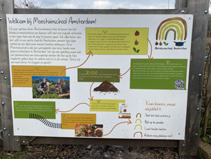
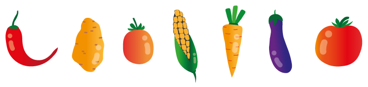

Waar het allemaal begon
In 2021 is de 'Moestuinschool' begonnen met zijn 1ste groep cursisten. Tijdens deze opleiding van een jaar lang gaan de mensen serieus aan de slag op de moestuin. Ze leren alles over hoe je je eigen groenten kan telen, het verbeteren van jou grond, bemesten, zaaien, planten, daarbij de planten opkweken en misschien nog wel het leukste werkje; de groenten beschermen tegen alle vogels, slakken en oprukkende wilde planten. Maar het allerbelangrijkste is toch wel het oogsten, opeten of bewaren voor thuis!
De plus punten!
Je zult er van opkijken wat er allemaal nodig is om jou eigen groenten te kweken. Je gaat anders kijken naar de groentes in de supermarkt en beseffen dat alles wat jij eet ook voeding nodig heeft. Een echte aanrader en ik kan je met 100% zekerheid zeggen dat je er groene vingers van krijgt!
Ben jij nou geïnteresseerd en wil jij je eventueel aanmelden? Klik dan hier om naar de contact pagina te gaan!